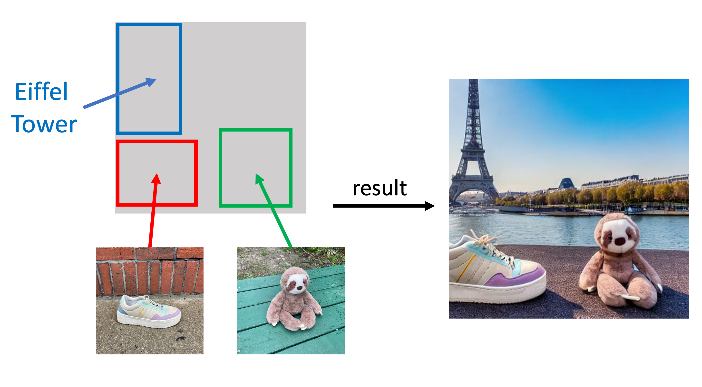
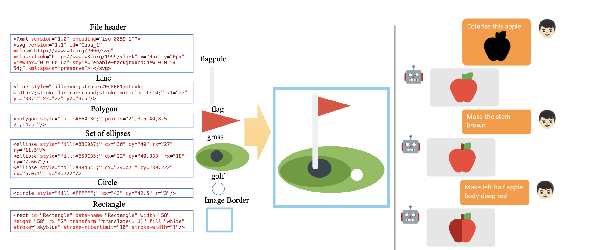
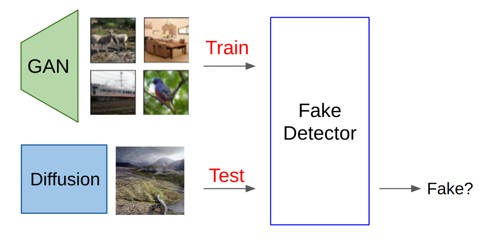
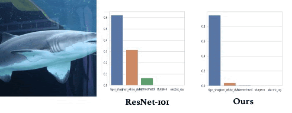

|
Hi! I am a research scientist at Adobe Research.
Email / CV / Google Scholar |
Sicheng Mo, Thao Nguyen, Xun Huang, Siddharth Srinivasan Iyer, Yijun Li, Yuchen Liu, Abhishek Tandon, Eli Shechtman, Krishna Kumar Singh, Yong Jae Lee, Bolei Zhou, Yuheng Li
IEEE International Conference on Computer Vision, (ICCV), 2025
🏆 Best paper at CVPR 2025 Workshop: "Transformers for Vision (T4V)
[ProjectPage, Code, Paper]
Thao Nguyen, Krishna Kumar Singh, Jing Shi, Trung Bui, Yong Jae Lee, Yuheng Li
Conference on Computer Vision and Pattern Recognition (CVPR), 2025
[ProjectPage, Code, Paper]

Bhishma Dedhia, David Bourgin, Krishna Kumar Singh, Yuheng Li, Yan Kang, Zhan Xu, Niraj K. Jha, Yuchen Liu
arXiv, 2025
[ProjectPage,Paper]
Thao Nguyen, Haotian Liu, Yuheng Li, Mu Cai, Utkarsh Ojha, Yong Jae Lee
Neural Information Processing Systems (NeurIPS), 2024
[ProjectPage, Code, Paper]

Haotian Liu, Chunyuan Li, Yuheng Li, Yong Jae Lee
IEEE Conference on Computer Vision and Pattern Recognition (CVPR), 2024
[ProjectPage, Code, Paper]

Thao Nguyen, Utkarsh Ojha, Yuheng Li, Haotian Liu, Yong Jae Lee
IEEE Conference on Computer Vision and Pattern Recognition (CVPR), 2024
[ProjectPage, Code, Paper]

Yuheng Li, Haotian Liu, Yangming Wen, Yong Jae Lee
arxiv, 2023

Mu Cai*, Zeyi Huang*, Yuheng Li, Haohan Wang, and Yong Jae Lee
(*equal contribution)
IEEE Winter Conference on Applications of Computer Vision (WACV), 2025, 2023

Thao Nguyen, Yuheng Li, Utkarsh Ojha, Yong Jae Lee
Neural Information Processing Systems (NeurIPS), 2023
[ProjectPage, Code, Paper]

Utkarsh Ojha*, Yuheng Li*, Anirudh Sundara Rajan*, Yingyu Liang, Yong Jae Lee
(*equal contribution)
Neural Information Processing Systems (NeurIPS), 2023

Yuheng Li, Haotian Liu, Qingyang Wu, Fangzhou Mu, Jianwei Yang, Jianfeng Gao, Chunyuan Li*, Yong Jae Lee*
(*equal advising)
IEEE Conference on Computer Vision and Pattern Recognition (CVPR), 2023
[arXiv] [code] [Project Page] [Demo] [Youtube]

Utkarsh Ojha*, Yuheng Li*, Yong Jae Lee
(*equal contribution)
IEEE Conference on Computer Vision and Pattern Recognition (CVPR), 2023

Xueyan Zou, Fanyi Xiao, Zhiding Yu, Yuheng Li, and Yong Jae Lee
International Journal of Computer Vision (IJCV), 2022

Yuheng Li, Yijun Li, Jingwan Lu, Eli Shechtman, Yong Jae Lee, Krishna Kumar Singh
Proceedings of the European Conference on Computer Vision (ECCV), 2022

Yang Xue, Yuheng Li, Krishna Kumar Singh, Yong Jae Lee
IEEE Conference on Computer Vision and Pattern Recognition (CVPR), 2022
[arXiv] [code]

Yuheng Li, Yijun Li, Jingwan Lu, Eli Shechtman, Yong Jae Lee, Krishna Kumar Singh
IEEE International Conference on Computer Vision (ICCV), 2021
[arXiv] [project]

Yuheng Li, Krishna Kumar Singh, Yong Jae Lee
British Machine Vision Conference (BMVC), 2021

Yuheng Li, Krishna Kumar Singh, Utkarsh Ojha, Yong Jae Lee
IEEE Conference on Computer Vision and Pattern Recognition (CVPR), 2020
[arXiv] [code]